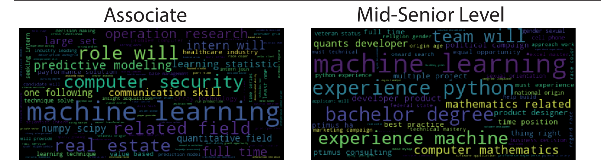

Descriptions were sentences; the model needed numbers
The first representation treated a description as a collection of words or short word groups. A column represented a word or phrase, and a row represented a description. Its values recorded how often those terms appeared, or their TF-IDF weights.
That made the representation easy to inspect. It also left decisions: whether letter case should matter, which common words to remove, whether word variations should share a form, and how many words to consider together.
Making word forms more consistent
def cleaning_text_regular_exp(df, text_field):
df[text_field] = df[text_field].str.replace(r'[^\w\s]', " ")
df[text_field] = df[text_field].str.replace(r":", "")
df[text_field] = df[text_field].str.replace(
r"[^A-Za-z0-9(),!?@\'\`\"\_\n]", " ")
df[text_field] = df[text_field].str.replace(r"\d", " ")
df[text_field] = df[text_field].str.lower()
return dfThe function replaces punctuation, removes digits, and lowercases the text. “Python” and “python” can then contribute to the same term. This is the historical function: its regular-expression replacements reflect the pandas behaviour expected by the original environment.
Removing digits is a decision worth revisiting for this problem. Numbers in experience requirements may carry information about seniority. I keep that original choice visible rather than silently replacing the cleaning method.
def removing_stop_words(data):
nltk.download("stopwords")
stop = stopwords.words('english')
data['token_no_stop_words'] = data['Description'].apply(
lambda x: " ".join([item for item in x.split() if item not in stop]))
return (data)
def lemmatizing(data, colum_name):
nltk.download('wordnet')
lemmatizer = WordNetLemmatizer()
data['lemmatizing'] = data[colum_name].apply(
lambda x: " ".join([lemmatizer.lemmatize(word) for word in x.split()]))
return dataStopword removal filters common English words. Lemmatisation uses WordNet to reduce some word variations to a shared form. The early count-based classifier applies it to the text after stopword removal. A stemming helper also exists in the repository, but the displayed baseline follows the lemmatisation path.
For a simple invented example, “Models and analyses” becomes lowercase text; removing “and” leaves “models analyses”; noun lemmatisation can give “model analysis.” This illustrates the operations, not a quote from the collected advertisements.
Counting words and short phrases
def vectorizer(data, range_d):
count_vectorizer = CountVectorizer(ngram_range=range_d)
counts = count_vectorizer.fit_transform(data)
return counts, count_vectorizerfit_transform learns the vocabulary from the supplied descriptions and builds their count table. The fitted vectorizer can then transform another description using the same columns. It does not create a new vocabulary for each prediction.
An ngram_range of (1, 1) uses single words. (1, 2) includes single words and adjacent two-word phrases. “machine learning” can therefore become a feature alongside “machine” and “learning.” The early logistic-regression script uses (1, 2), while other experiments use different ranges.
When a frequent word is not very informative
TF-IDF adds another view. A term receives weight according to how often it occurs in the description and how broadly it appears across the fitted collection. A word appearing in almost every advertisement may be less useful for separating levels than a more distinctive term.
The early TF-IDF script and later Naive Bayes search explore that representation. The final shared text pipeline uses CountVectorizer followed by TfidfTransformer. The early helper accepts several arguments but only forwards stop_words when constructing its vectorizer; the later search exposes vocabulary choices directly.
('vectorized', CountVectorizer()),
('tfidf', TfidfTransformer()),Looking at the language before interpreting the model


The word-frequency script and poster gave me another way to look at the corpus. Many terms overlap between levels: tools and subject vocabulary do not belong to only one seniority category. The classifier has to learn combinations and weights rather than rely on one obvious keyword.
The figures remain historical exploratory material. Reading a large word in a cloud is different from measuring how strongly a fitted model uses it. With the representation in place, the next article follows the first classifiers.
Based on the original project code and records. Historical results and retrospective checks are identified in the text. Personal file paths are omitted from examples.